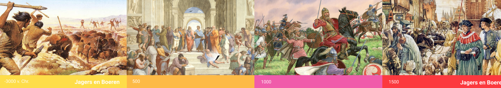

Augmented Reality Augmented Reality (AR) is ook bekend als mixed reality. Het doel van AR is niet om de gebruiker naar een andere wereld te transporteren. Het doel is om de omgeving van de gebruiker te verbeteren, door middel van verschillende virtuele objecten toe te voegen. Op dit moment maken al veel mensen onbewust gebruik van AR, bijvoorbeeld de apps Snapchat en PokemonGo. Virtual Reality Virtual reality (VR) is een gesimuleerde computer omgeving. VR geeft de gebruiker het gevoel dat hij zich in die omgeving bevindt, in plaats van waar de persoon zich werkelijk bevind. De kijk op de realiteit van de wereld is niet anders of veranderd niet. Om er voor te zorgen dat de hersenen de virtuale omgeving waarnemen, zijn er een aantal factoren essentieel, zoals de headset. De headset zorgt er voor dat de gebruiker driedimensionaal ziet, waardoor er diepgang er aan wordt toegevoegd aan de beelden wat worden bekeken. VR is wanneer de persoon is staat is om zich volledig vrij kan beweging binnen een omgeving. Daarnaast ook verschillende interactie aan kan toevoegen. AR kan aan verschillende thema's worden toegevoegd: educatie, games, simulatie, afstandbidining en therapie. De verschillen AR is eerder in 1990 door Thomas Corder (Boing Researcher) onderzocht. Het woord augmented betekenin in het latijn or guerra de letterijklijke vertaling hiervoor is ‘verhogen’. De verschillen tussen AR en VR is de perceptie and proces van van het menselijkbrein. De manier van technologie die feitelijke verpakte ervaringen bieden op een duidelijke wijze. Inspiratie De eerste video genaamd 'I spent a week in a VR headset, this is what happened'. Deze video heeft mij een betere beeld gegeven VR en AR. De jongenman heeft heel de week een VR headset. Met andere woorden heeft hij in een andere wereld geleeft. Van te voren had hij geplant wat hij al deze dagen zal doen. Hierbij laat hij vooral zien, wat voor keuzes en mogelijkheden er zijn in de VR wereld. Wat ik bijzonder vond is dat hij op het laatste moment zei, alles in na te maken van de wereld, maar het gevel en de energie van de natuur/wereld is niet na te maken. Daarnaast heb ik een video toegevoegd genaamd 'Where augmented reality meets healthcare'. Dit vond ik vooral een indrukwekkende video, omdat zij als chirrurg laat zien dat we leuke games kunnen maken, maar dat we VR en AR op een positieve manier kunnen toepassen voor de maatschappij. Het zou velen patienten helpen over geheel de wereld.
In het onderstaande zie je de opdrachten vanuit het onderwerp AR & VR. Tijdens de lezing werden verschillende toepassingen van virtuele en augmented reality getoond. Maak hierbij drie concepten, die betrekking hebben op het onderwerp AR of VR. Selecteer 3 toepassingsgebied. Ik heb voor de volgende onderwerpen gekozen: Onderwijs, angst therapie en musea.
Thema Educatie Een kind stapt in de wereld van de geschiedenis. Hierbij wordt er een tijdlijn weergeven van alle jaren. Er is een keuze om je te specialiseren over elk onderwerp of tijd. De tijdlijn is een chronologische volgorde visueel weergeven. De Visuals zijn bewegende beelden die met elkaar verbonden zijn. Zodat er een goed beeld is van het proces de jaren. Hierbij wordt bijvoorbeeld zichtbaar dat er eerst ongeschreven bronnen zijn en vervolgens geschreven bronnen zijn gekomen. Product Tijdmachine, waar alle informatie staat over de geschiedenis. Doel Het doel van dit concept is om het vak geschiedenis meer levend te maken en interesse bij de kinderen op te wekken. Door middel van zelf in de wereld te stappen, zullen zij de tijden anders ervaren. Bereiken Dat alle kinderen van verschillende leeftijden en niveaus meer kennis krijgen over de geschiedenis. Door het visueel weer te geven, ook meer overzicht.
 Concept tijdmachine
Thema Angst therapie
Een omgeving waar je tips en trics krijgt om te solliciteren. Waarbij persoonlijk hulp wordt aangeboden. Daarnaast krijg je de mogelijkheid om gesprekken met verschillende soorten mensen te oefenen, vanuit verschillende vakgebieden.
Product
Een formule maken waar alle fases van een sollicitatie procedure worden behandeld (CV, sollicitatiebrief, gesprektechnieken en kleding. Bij deze formule wordt je klaargestoomd voor een sollicitatie.
Doel
Het doel van dit concept is om te leren solliciteren en jezelf op een professionele wijze te presenteren.
Bereiken
Dat alle personen met een angst om te solliciteren, toch durven om de keuze te maken om de stap te maken. Om toch voor de baan van hun dromen te gaan. In plaats van dat ze thuis blijven of dat ze toch naar hun oude baan gaan met tegenzin.
AR en VR vond ik een heel erg leuk onderwerp. Ik had er uiteraard wel eerder van gehoord, maar niet volledig in details. Ik wist dat het voornamelijk geimplementeerd werd in games. Bijzonder vin dat je door middel van VR en AR de hersenen kan manipuleren met fysieken dingen. Hierbij kwam ik er achter dat VR en AR verschillende doeleindes kunnen hebben, bijvoorbeeld een simultatie voor verschiillende beroepen (politie, engineering, piloten, docters etc.) en daarnaast de mensen kan helpen op een persoonlijke wijze. Ik heb een goed gevoel over VR en AR, voornamelijk omdat ik denk omdat je vanuit verschillende perspectieve de mensen kan helpen. Ik vond het interressant om te zien bij de hoorcollege, dat sommige oudere weer in hun oude stad konden fietsen. Veel ouderen hebben deze mogelijkheid niet. Het zou ouderen kunnen helpen om toch hobby te kunnen doen, waardoor wellicht de ouderen van in de toekomst minder eenzaam als de ouderen van nu.